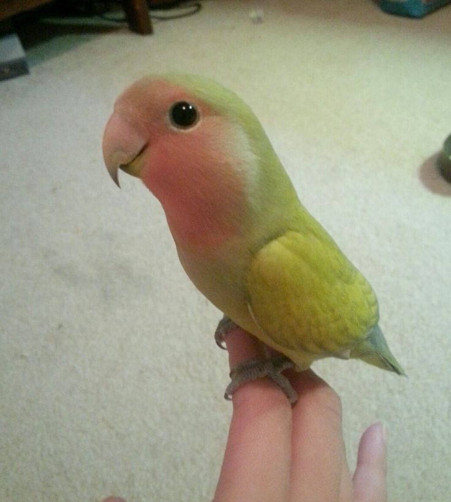
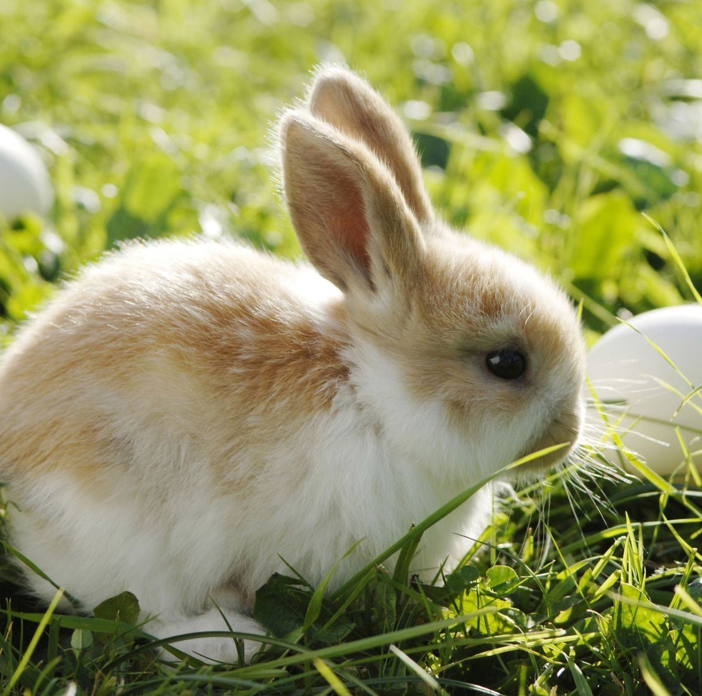
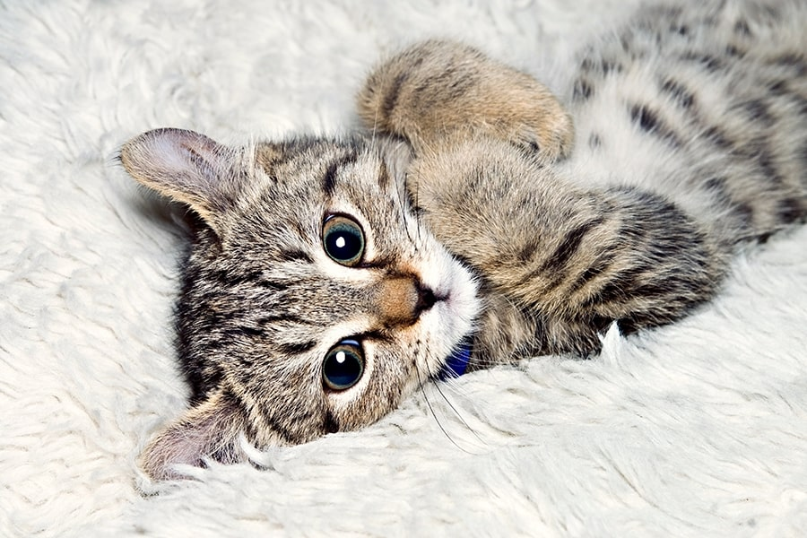

<!DOCTYPE html>
<html lang="en-IE"></html>
<body id="page2">
<head>
    <meta charset="utf-8">
    <title>About page</title>
    <link rel="stylesheet" href="project.css">
</head>
    <font size="5"><center><h1 id="h1pg2">About the pets</h1></center></font>
    <table style="width: 100%;">
        <tr>
            <th> </th>
            <th>Dogs</th>
            <th>Cats</th>
            <th>Parrots</th>
            <th>Rabbit</th>
        </tr>
        <tr>
            <td>Type of animals</td>
            <td>domestic mammal</td>
            <td>family Felidae</td>
            <td>Bird</td>
            <td>mammals</td>
        </tr>
        <tr>
            <td>Description</td>
            <td>The dog is a domesticated descendant of the wolf</td>
            <td>The cat,commonly referred to as the house cat, is the only domesticated species in the family Felidae</td>
            <td>Parrots are birds with a strong curved beak, upright stance, and clawed feet</td>
            <td>Rabbits, also known as bunnies,are small mammals in the family Leporidae of the order Lagomorpha</td>
        </tr>
        <tr>
            <td>Charateristics</td>
            <td>Dogs are known to be faithful and loyal companions, protective of their masters and territory</td>
            <td>cat's independent personality, grace, cleanliness, and subtle displays of affection have wide appeal</td>
            <td>Many parrots are vividly colored, and some are multi-colored Most parrots exhibit little or no sexual dimorphism</td>
            <td>Rabbits are small, furry mammals with long ears, short fluffy tails, and strong, large hind legs</td>
        </tr>
        <tr>
            <td>Pictures</td>
            <td></td>
            <td></td>
            <td></td>
            <td></td>
        </tr>
    </table>

    <div>
        <h2 id="h2page2">How to care for an adopted pet</h2>
        <p><h2>Taking care of Dogs</h2></p>
        <p id="P-page2">•Provide clean water, appropriate food and shelter suited to your dog's needs
            Exercise your dog daily (exercise needs depend on dog breed).
            Groom your dog regularly to keep coat and skin healthy.
            Play with your dog to keep them stimulated.
            Socialise your dog regularly with other dogs.</p>
         <p id="P-page2">•Make him part of the family. Pets, especially dogs, need companionship.
            Pet proof your house.
            Care for your pet.
            Spay and neuter your pet. 
            Always keep an ID tag on your pet. 
            Train your pet to understand obedience. 
            Give him the exercise he needs.
            Feed him properly.</p>
         <p id="P-page2">•Providing your pet with the basic necessities goes without saying. 
            They should have access to clean water, healthy and nutritious food and shelter at all times. 
            A healthy, proper diet is important for your pet's quality of life.</p>
         

         <p><h2>Taking care of Cats</h2></p>
        <p id="P-page2">•You have a responsibility to keep your cat happy and healthy. 
            This means protecting them from pain, suffering, injury and disease.
            This could be through preventative treatments, such as vaccines, or making sure to keep up with regular check-ups at the vet.  </p>
         <p id="P-page2">•Responsible cat ownership includes caring for your pet's welfare needs, 
            registration, microchipping and complying with local requirements for keeping cats on your property, 
            and desexing cats that are not being kept for breeding purposes.</p>
         <p id="P-page2">• When it comes to owninng a cat its important to introduce them to Litter box training.
            Frequent petting and cuddling.
            Toy introduction.
            Exploration with boxes, paper bags, etc.
            Rewarding good behavior with treats.
            Redirection from biting or scratching.
            Introduction to new people and animals in a controlled environment.
            Weekly combing and grooming and handling.</p>
         

         <p><h2>Taking care of a Parrot</h2></p>
         <p id="P-page2">•Bird Responsibilities=
            Food and Water Bowls. Birds are rather chaotic eaters and drop food into their water bowls,
            water into their food bowls, etc. 
            Cage Cleaning. 
            An Avian Vet.
            Bathing, Grooming and Trimming. 
            Toys, Entertainment and Playtime. 
            Further Reading. </p>
         <p id="P-page2">•Taking care of a Parrot means Regularly clean your bird's cage, 
            dishes, perches, and toys using bird-safe or natural cleaning products. 
            Use bird-safe pest control methods to keep insects and other pests at bay. 
            Provide ample opportunities for your bird to bathe.
            Keep your bird's beak and nails trim. </p>
         <p id="P-page2">• Parrots are incredibly smart, and they get bored easily. 
            Owners need to keep them amused or they can be quite messy, loud, and destructive. 
            They are also not a pet you can essentially leave with a bowl of food and go away for the weekend. 
            They are, I would argue, a much greater responsibility than dogs or cats.</p>
         

         <p><h2>Taking care of a Rabbit</h2></p>
         <p id="P-page2">•In general rabbits need appropriate housing, exercise, socialisation and a specific diet for 
            good welfare. Some breeds of rabbits, particularly the longer haired rabbits, may require daily grooming. 
            It is important that you understand all the requirements for caring for a rabbit before you buy one.</p>
         <p id="P-page2">•Things to take care of a bunny A spacious and secure hutch. 
            Bedding materials. 
            Litter trays and fillings. 
            Plenty of hay and other food. 
            A food bowl or dispenser. 
            A bottle or water bowl. 
            Toys. 
            Rabbit-safe cleaning products.</p>
         <p id="P-page2">•You'll need to: Tidy your rabbit's enclosure every day—and clean it thoroughly once a week. 
            Many rabbits can be litter trained, but they produce a lot of waste. Provide fresh vegetables, 
            which are part of a healthy rabbit diet, and an unlimited supply of hay.</p>
         
    </div>
    <footer id="footerpg2">
        <a id="Apage2" href="index.html" target="_self" title="Home page"> 
            <h2>Home page</h2>
        </a>
        <a id="Apage2" href="thirdpage.html" target="_self" title="Information page">
            <h2>Information page</h2>
        </a>
    </footer>
</body>    
</html>